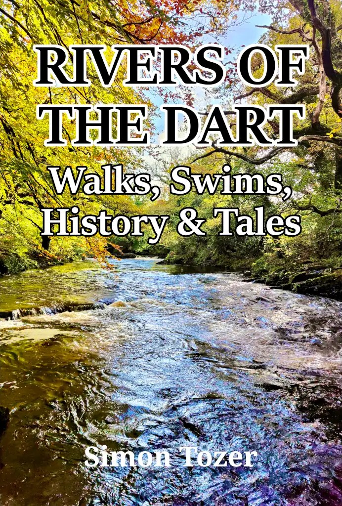
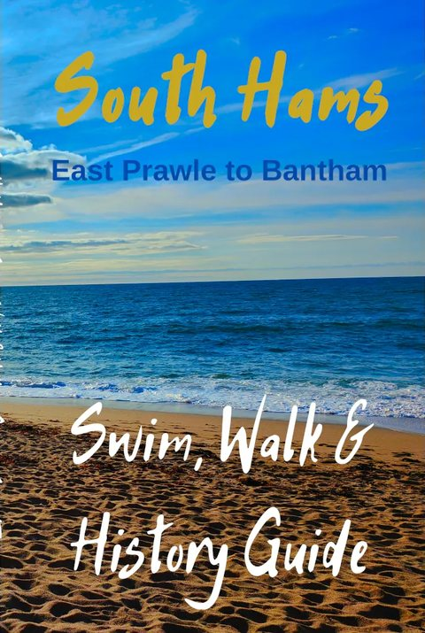
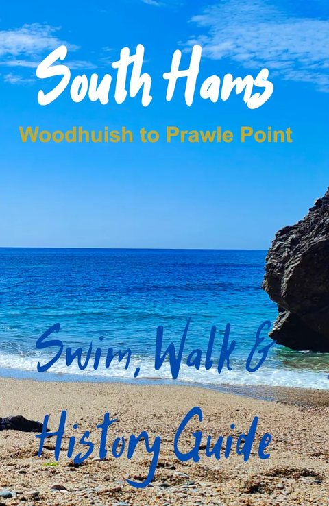
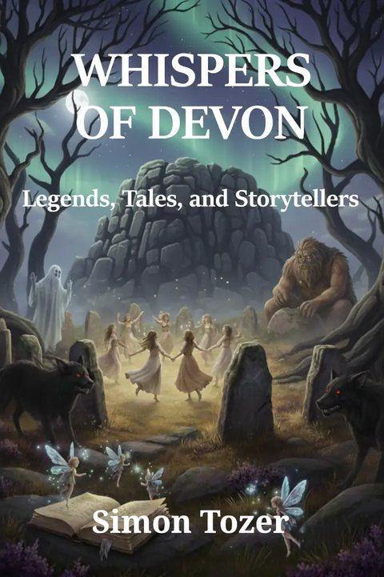

Rivers of the DartWalks, Swims, History & Tales, by Simon Tozer
Discover the wild heart of Dartmoor, one river at a time.
Swim, Walk & History
Simon swims in Devon's rivers and sea all year round. These guides send you to the same places: beaches, rivers and the paths between them, with the history and the stories on the way.
South Devon Beaches
Swim, Walk & History Guide.
Get it from Simon
South Hams Central
Woodhuish to Prawle Point.
Get it from Simon
South Hams East
East Prawle to Bantham.
Get it from Simon
Whispers of Devon
Legends, tales and storytellers.
Get it from Simon
Novels
Dartmoor is in the fiction too. Simon's first novel came out in 2019, and the Book of Dumnonia and Gateways of the Fey series have followed.
Come and hear Simon talk
Four evenings this November, Simon is telling Dartmoor Tales, Giants and Hounds. Tickets are from the shop, between £8 and £12.
- Rivers of the Dart, an illustrated talk
- Wild swimming in South Devon, the South Hams and Dartmoor
- Blue and Green: nature as medicine
- Whispers of Devon
- 3NovDawlishDartmoor Tales, Giants & Hounds
- 10NovBovey TraceyDartmoor Tales, Giants & Hounds
- 20NovCountess WearDartmoor Tales, Giants & Hounds
- 23NovBuckfastleighDartmoor Tales, Giants & Hounds
Simon Tozer
Simon lives in Dawlish with his partner, Kate. He swims all year round, and on the page he writes about the places he swims and walks.
He can trace his family in South Devon back to the 1500s.
- 2019 His first novel, Briana and the Saxon Warrior.
- 2023 Christos and the Dartmoor Giants, the second Book of Dumnonia.
- On call He is a firefighter in his local community.
- Tea He also runs an award-winning organic loose leaf tea business.